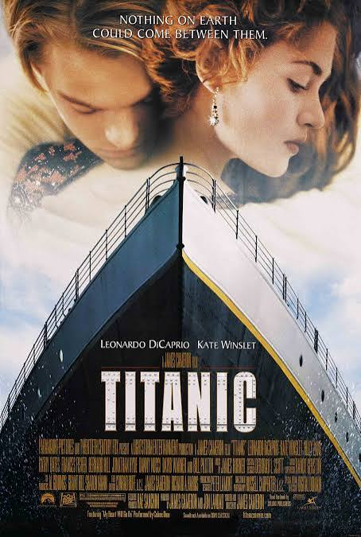
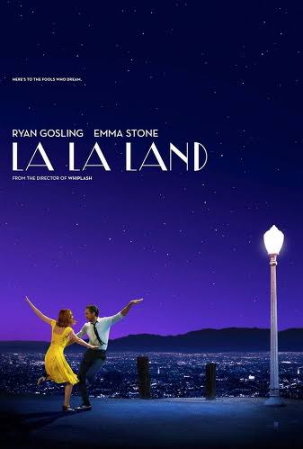
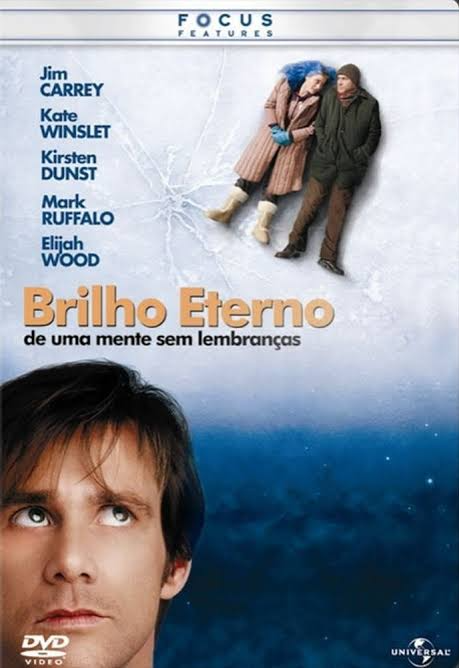
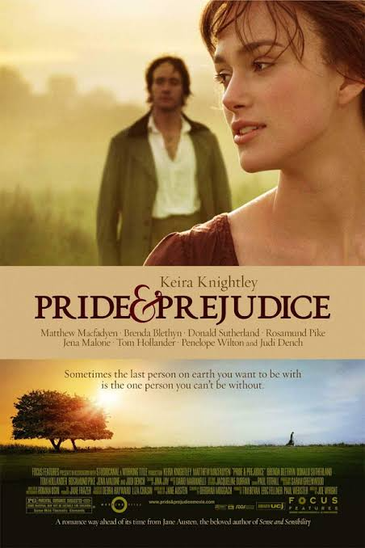
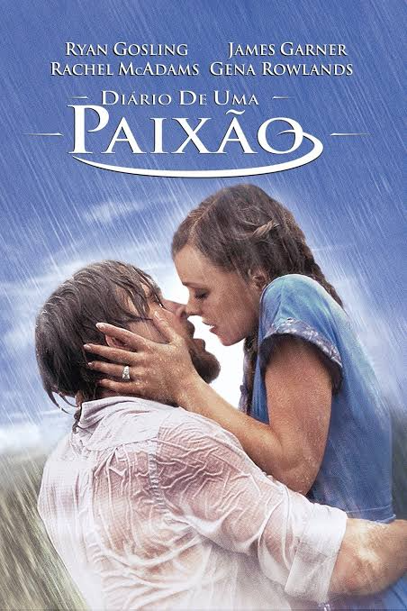

As histórias de amor são muito mais antigas que o cinema: várias das fórmulas usadas até hoje vêm dos romances da Idade Média. Na tela, um marco inicial é O Beijo (1896), produzido pela empresa de Thomas Edison, com May Irwin e John C. Rice, em cena tirada de uma peça da Broadway.
No cinema mudo, o romance aparecia principalmente em melodramas de amores trágicos, e Rudolph Valentino virou símbolo do gênero com O Sheik (1921). A era de ouro de Hollywood consagrou o romance com clássicos como E o Vento Levou (1939) e Casablanca (1942).
Conheça alguns dos principais subgêneros
Conheça alguns dos filmes mais icônicos do gênero




